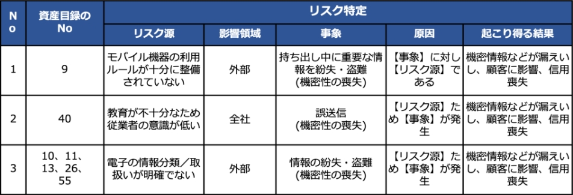
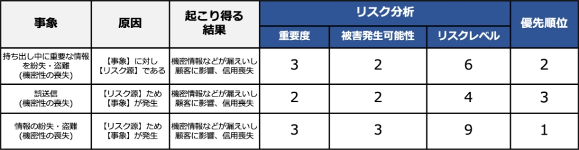
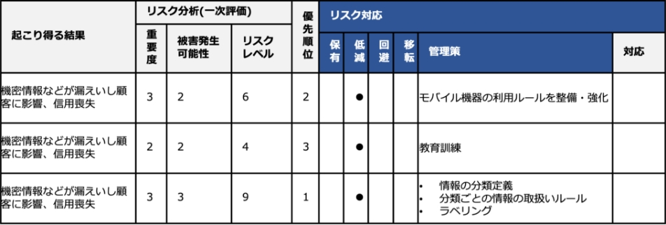
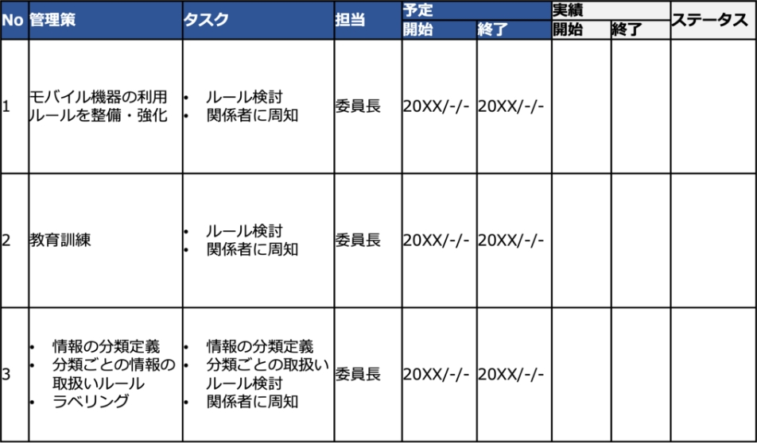
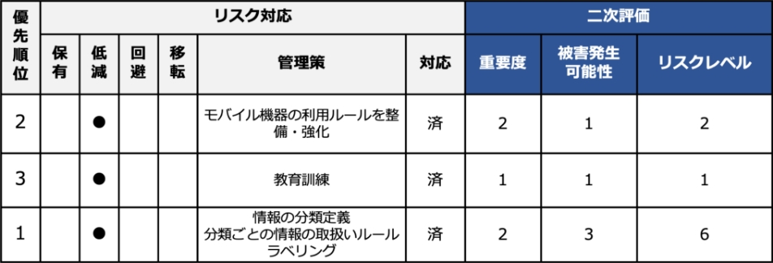
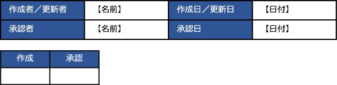
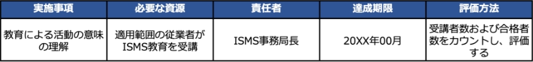

13-2-4. ISMS：6. 計画
「6. 計画」は、PDCAサイクルの「P（計画）」に位置しており、リスクマネジメントの確立、情報セキュリティにおけるリスクアセスメント、リスク対応、情報セキュリティ目的の管理に関する要求事項を示しています。
6. 計画
作成ドキュメント（例）
6.1 リスク及び機会に対処する活動
-
1.一般
特定した内外部の課題と、利害関係者のニーズおよび期待を考慮して、リスク・機会（期待する状況や結果）を決定し、対処するための活動を明確にすることを要求しています。 -
2.情報セキュリティリスクアセスメント
組織や企業の資産に対する、情報セキュリティリスクアセスメントプロセスの確立を要求しています。 -
3.情報セキュリティリスク対応
情報セキュリティリスク対応の手順を確立することを要求しています。
- 資産目録（情報資産管理台帳）
- リスクアセスメント結果報告書
- 適用宣言書
- リスク対応計画
6.2 情報セキュリティ目的及びそれを達成するための計画策定
情報セキュリティ目的を確立し、達成するための計画を策定することを要求しています。
ISMS有効性評価表
6.3 変更の計画策定
ISMSの変更が必要なときは、計画的な変更を要求しています。
ー
6.1 リスク及び機会に対処する活動
作成するドキュメント
- 資産目録（情報資産管理台帳）
- リスクアセスメント結果報告書
「リスク及び機会に対処する活動」とは、「ISMSの意図した成果を達成する」「ISMSの望ましくない影響を防止・低減する」「継続的改善を達成する」の3つを実現するために、妨げとなるような機会やリスクを発見し、対処することです。
平たく言えば、情報セキュリティ上のリスクに対して、適切な対策を講じることで、情報セキュリティを確保するための活動になります。
具体的には「リスクアセスメントの実施」「リスク対応策の作成と実施」「リスク対応策の有効性評価」「継続的改善」といった活動が含まれます。
リスクアセスメントは、組織や企業の資産に対するリスクの洗い出しや分析、評価を行い、リスク対応の優先順位づけをしていくプロセスになります。リスクアセスメントの実施により、リスクを評価し、事前にリスクを把握することで必要な投資額を含め、企業が適切な対策を検討することが可能になります。
情報セキュリティのリスク基準を確立し、維持する
リスクアセスメントを実施するにあたり、リスクの重大性を評価するための目安となるリスク基準を決める必要があります。ISMSでは、リスク基準に「リスク受容基準」と「情報セキュリティリスクアセスメントを実施するための基準」を含むように明示されています。
※「11-2-1. リスク基準の確立」を参照
情報セキュリティリスクを特定する
企業が掲げる目的・目標の達成を阻害する可能性のあるリスクをすべて洗い出すことです。そのため、リスクの発生可能性や影響の大きさを考慮せず、少しでも企業に影響を与えそうなリスクを洗い出すことが目的となります。リスク特定として最終的な成果はリスク一覧表の作成になります。
※「11-2-2. リスクの特定」を参照
情報セキュリティリスクを分析する
リスク特定で特定されたリスクに対して、リスク分析を行います。リスク分析を行うことで、「企業にとって対応が必要なリスクはどれか」、「優先的に対応しなければならないリスクは何か」といったことを判断します。リスク分析で求めた結果を、「リスクアセスメント結果報告書」に記載します。
※「11-2-3. リスクの分析」を参照
情報セキュリティリスクを評価する
リスク分析で算出したリスクレベルからリスク受容基準と比較し、リスク対策が必要かどうかを判断します。また、算出したリスクレベルをもとに優先順位をつけます。
※「11-2-4. リスクの評価」を参照
本項では、資産目録（情報資産管理台帳）とリスクアセスメント結果報告書を作成します。2つのドキュメントは、ISO/IEC 27001:2022の管理策「5.9 情報およびその他の関連資産の目録」に対応します。
資産目録（情報資産管理台帳）の作成方法は「 11-2. リスクマネジメント：リスクアセスメント」で説明しました。作成した資産目録（情報資産管理台帳）から、リスクアセスメントの結果をまとめた「リスクアセスメント結果報告書」について説明します。
リスク特定における、リスクアセスメント結果報告書の作成方法（例）
以下の手順で、リスク一覧表となるリスクアセスメント結果報告書を作成します。
1.資産目録（情報資産管理台帳）から、「情報セキュリティリスクアセスメントを実施するための基準」で決定した基準をもとに、重要資産を選択します。例では、機密性、完全性、可用性の項目の評価値が1つでも3となった資産を重要資産としています。選択した重要資産を「リスクアセスメント結果報告書」に記載し、リスク一覧表を作成します。
リスクアセスメント結果報告書には、以下の内容を記載します。
-
資産目録のNo
作成した資産目録に対応する項番を記載します。※リスクによっては資産目録のNoは複数になることもあります。
-
リスク源
想定される脅威を記載します。
（例）モバイル機器の利用ルールが十分に整備されていない など -
影響領域
脅威が発生した場合の影響範囲を記載します。
（例）外部、全社 など -
事象
発生する可能性のある事象を記載します。
（例）持ち出し中に重要な情報を紛失・盗難 (機密性の喪失) など -
原因
事象が発生する原因を記載します。
（例）【事象】に対し【リスク源】である、【リスク源】ため【事象】が発生 など -
起こり得る結果
事象が発生した場合に起きる結果を記載します。
（例）機密情報などが漏えいし顧客に影響、信用喪失 など
リスク分析・リスク評価における、リスクアセスメント結果報告書の作成方法（例）
具体的には、以下の内容を記載します。
-
重要度
「機密性」「完全性」「可用性」いずれかの最大値で判断します。
（例）
機密性：1、完全性：2、可用性：3 → 重要度：3
機密性：2、完全性：1、可用性：1 → 重要度：2 -
被害発生可能性
脅威の起こりやすさと脆弱性のつけ込みやすさから換算表に当てはめて算出します。
起こりやすさ：2、つけ込みやすさ：1 → 被害発生可能性：1
起こりやすさ：3、つけ込みやすさ：3 → 被害発生可能性：3
-
リスクレベル
重要度と被害発生可能性から算出します。
（例）
重要度：3、被害発生可能性：1 → リスクレベル：3
重要度：2、被害発生可能性：3 → リスクレベル：6 -
優先順位
リスク受容基準をもとに、リスクレベルから優先順位づけを行います。
（例）
1：早急に対応、2：今期中に対応、3:：今期対応が望ましい
リスクレベル：9 → 優先順位：1
リスクレベル：4 → 優先順位：3
リスクレベル：6 → 優先順位：2
作成するドキュメント
- リスクアセスメント結果報告書
- 適用宣言書
- リスク対応計画
リスクアセスメントにおいて、自社の情報セキュリティリスクを洗い出します。リスク対応では、洗い出したそれぞれのリスクに対してどう対策するのか、ISMSの管理策を実施の有無を含めて検討します。リスク対応は以下のプロセスになります。
リスク対応のプロセス
1.適切な情報セキュリティリスク対応の選択肢の選定
リスク対応の選択肢（リスクの回避、低減、移転、受容（保有））から選定する。
2.情報セキュリティリスク対応の選択肢の実施に必要なすべての管理策の決定
ISO/IEC 27001:2022の附属書A、ISO/IEC 27017などの管理策集から、リスクの回避、低減、移転、受容（保有）の中から選択したリスク対応に必要なすべての管理策を決定します。
3.決定した管理策とISO/IEC 27001:2022附属書A の管理策との比較
必要なすべての管理策を、ISO/IEC 27001:2022附属書Aに挙げられている管理策と比較します。
4.適用宣言書の作成
必要なすべての管理策と、その理由および実施状況を文書化します。適用宣言書に含まれるすべての管理策の実施状況は、“実施された”、“一部実施された”または“実施されていない”として記述できます。
5.情報セキュリティリスク対応計画
組織がリスクに対応する必要性を含んだリスク対応計画を作成します。リスク対応計画とは、組織のリスク受容基準を満たすようにリスクを修正するための計画のことです。
- 組織の必要な管理策を実施するためのプロジェクト計画
- リスクを修正するために管理策が環境と相互にどのように作用するかを記述した設計計画
6.リスク所有者による承認
リスク所有者は、リスク対応計画を承認します。
7.残留している情報セキュリティリスクの受容
リスク所有者は、残留リスクが受容可能かどうかを判断し、決定します。
本項では、リスクアセスメント結果報告書、適用宣言書、リスク対応計画とISMS有効性評価表を作成します。リスクアセスメント結果報告書は、リスクアセスメントで作成したドキュメントにリスク対応と二次評価を記載します。
1.適切な情報セキュリティリスク対応の選択肢の選定
リスク対応には、以下の4つがあります。
リスク回避
リスクが発生する可能性のある環境を排除するなど、リスクそのものをなくそうとすることです。たとえば、個人情報を受け取らないようにしたり、その業務自体をやめたりするといった方法です。
リスク低減
セキュリティ対策（管理策）を採用することによって、リスクの発生確率を低くしたり、リスクが顕在化したときの影響の大きさを小さくしたりすることです。「軽減」「修正」と呼ばれることもあります。
リスク移転
リスクを他者に移して、自分たちの責任範囲外にしたり、リスクが顕在化したときの損失を他者に引き受けさせたりすることです。たとえばクラウドのサーバを利用することによって、サーバが破壊されたり、盗難されたりするリスクを移転することができます。「共有」と呼ばれることもあります。
リスク受容（保有）
対策を行わずにリスクを受け入れるということです。被害は大きいが発生可能性がほとんどない場合や、発生しても被害がほぼない場合が該当します。
2.選択肢の実施に必要なすべての管理策の決定
リスク対応を実施することが決まった場合は、管理策を決める必要があります。管理策は、リスクの回避、低減、移転、受容（保有）の中から選択したリスク対応に必要な管理策をすべて決定します。
リスク対応における、リスクアセスメント結果報告書の作成方法（例）
リスク対応した結果を、リスクアセスメント結果報告書に記載します。
具体的には、以下の内容を記載します。
-
保有、低減、回避、移転
リスク対応で決定した対応について「●」を記載します。 -
管理策
リスク対応で決定した内容を記載します。
（例）モバイル機器の利用ルールを整備・強化 など
3.決定した管理策とISO/IEC 27001:2022附属書A の管理策との比較
附属書Aは、ISO/IEC 27001で記載されている要求事項をもとに情報セキュリティ上のリスクを低減するための目的と、その目的を達成するための管理策で構成されています。
ISO/IEC 27001:2022では、合計93種の管理策が、以下の4つのカテゴリに分類されています。
- 組織的管理策
- 人的管理策
- 物理的管理策
- 技術的管理策
リスク対応で決定した管理策を附属書Aと比較し、必要な管理策を見落としていないか確認します。附属書Aの管理策のリストは包括的なものではないので、必要に応じてリストにない管理策を採用してもかまいません。
（例）
リスクアセスメント結果報告書で記載の管理策：
- 情報の分類定義
- 分類ごとの情報の取扱いルール
- ラベリング
附属書Aに記載の管理策：
- 5.12 情報の分類
- 5.13 情報のラベル付け
4.適用宣言書の作成
「適用宣言書」は、ISMS認証を取得するすべての組織に作成が義務づけられています。認証を取得しない組織では、 必須ではありませんが、情報セキュリティに対する取組を明確にするために「適用宣言書」を作成することが望ましいとされています。
適用宣言書は以下の内容を含むように作成します。
- 必要な管理策
- それらの管理策を含めた理由
- それらの管理策を実施しているか否か
- 附属書Aに規定する管理策を除外した理由
適用宣言書には、以下の内容を含めます。
-
管理目的および管理策
ISO/IEC 27001の附属書Aの管理策を記載します。
（例）5.1 情報セキュリティのための方針群 など -
適用
適用または適用除外を記載します。
（例）○：適用、×：適用除外 -
実施・未実施
実施したか否かを記載します。
（例）○：実施、未：未実施、ー：適用除外 -
管理策を含めた理由または管理策を除外した理由
管理策を行う場合も理由を記載します。
（例）情報セキュリティのための経営層の方向性および支持を、事業上の要求事項、関連する法令および規則に従って規定するため など -
規程・手順書
管理策が含まれている規程または手順書を記載します。
（例）情報セキュリティ手順書5.1.1、A-02 情報セキュリティ方針 など
5.情報セキュリティリスク対応計画
「リスク対応計画」は、それぞれのリスクに対して、どのような管理策を、誰が、いつまでに、どのように実施するのかを表にまとめたものになります。表には、対策の実績やステータスを記載する欄もありますが、これらの欄については「8. 運用」で説明します。
リスク対応計画の作成方法（例）
リスクアセスメント結果報告書から、リスク対応を行う管理策をすべて記載し、それぞれの具体的な内容や、担当者などを記載します。リスク対応を行った場合、実績やリスク対応のステータスを記載する必要があります。
※実績とステータスは、「8.運用」で記載します。
リスク対応計画では、以下の内容を記載します。
-
管理策
リスクアセスメント結果報告書の管理策を記載します。
（例）モバイル機器の利用ルールを整備・強化 など -
タスク
管理策を実施する上で、具体的な業務を記載します。
（例）ルール検討 関係者に周知 -
担当
管理策の担当者を記載します。
（例）委員長 -
予定
リスク対応予定の開始日と終了日を記載します。
（例）開始：2023/08/10 終了：2023/09/29
二次評価
「二次評価」とは、リスクに対する管理策の有効性評価のために行うものです。
リスク対応を実施した結果は、二次評価としてリスクアセスメント結果報告書に記載します。リスク分析で使用した値を用いて、リスク対応を実施した結果をもとに、情報資産に対する再評価を実施します。
リスク対応における、リスクアセスメント結果報告書の作成方法（例）
具体的には、以下の内容を記載します。
-
重要度（係数）
「機密性」「完全性」「可用性」いずれかの最大値で判断します。
（例）
機密性：1、完全性：2、可用性：3 → 重要度：3
機密性：2、完全性：1、可用性：1 → 重要度：2 -
被害発生可能性
脅威の起こりやすさと脆弱性のつけ込みやすさから換算表に当てはめて算出します。
（例）
起こりやすさ：2、つけ込みやすさ：1 → 被害発生可能性：1
起こりやすさ：3、つけ込みやすさ：3 → 被害発生可能性：3 -
リスクレベル
重要度と被害発生可能性から算出します。
（例）
重要度：3、被害発生可能性：1 → リスクレベル：3
重要度：2、被害発生可能性：3 → リスクレベル：6
6.リスク所有者による承認/7.残留している情報セキュリティリスクの受容
リスク対応計画と残留リスク（管理策の適用後に）は、リスク特定で決めたリスク所有者の承認が必要になります。リスク所有者が承認する際は、記録をする必要があるため、ワークフローやチェック欄などを用います。
（例）
承認プロセスとして、作成した書類にチェック欄（電子印欄など）を作成します。
6.2 情報セキュリティ目的及びそれを達成するための計画策定
作成するドキュメント
ISMS有効性評価表
情報セキュリティ目的の基本要件として以下の要件を満たす必要があります。
- a.情報セキュリティ方針と整合
- b.測定可能
- c.適用される情報セキュリティ要求事項、並びにリスクアセスメントおよびリスク対応の結果を考慮
- d.伝達すること
- e.必要に応じて、更新すること
情報セキュリティ目的と、それを達成するための計画をISMS有効性評価表に記載します。
「8. 運用」で計画を実施し、「9. パフォーマンス評価」で評価を行います。評価結果の記載方法は、「9. パフォーマンス評価」で説明します。
ISMS有効性評価表の作成方法（例）
【計画】
情報セキュリティ目的
- お客様との契約および法的または規制要求事項を尊重し遵守する
- 情報セキュリティ事故を未然に防止する
- 情報セキュリティ上の脅威から情報資産を保護する
- 当社ISMSの意味を理解した活動の開始
評価指標
ISMS教育受講／合格 100％(全従業者)
【備考】
取組の初年度であるため、全従業者が活動に関与、さらには、活動を理解し、全社の
セキュリティ目的の達成に向けた活動開始ができたことを確認する。
情報セキュリティ目的達成のための計画
ISMS有効性評価表では、以下の内容を記載します。
-
情報セキュリティ目的
適用範囲（組織全体、各部署ごと）でのセキュリティ目的を記載します。
（例）重大なセキュリティインシデントを発生させない、
マルウェア感染およびサイバー攻撃によるシステム停止の防止 など -
評価指標
測定可能な値を記載します。
（例）マルウェアの感染の有無、システム停止の有無 など -
実施事項
情報セキュリティ目的を達成するための実施内容を記載します。
（例）ウイルス対策ソフトのインストール、標的型メール訓練の実施 など -
必要な資源
実施事項のために必要な資源を記載します。
（例）ウイルス対策ソフト、標的型メール訓練 など -
責任者
計画の責任者を記載します。
（例）部長各自 など -
達成期限
計画の期限を記載します。
（例）年度末、2023年9月 など -
評価方法
具体的な評価方法を記載します。
（例）年度末に発生したセキュリティインシデントをカウントし、評価する など